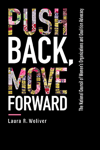

<body bgcolor="#FFFFFF" text="#000000" link="#0000FF" vlink="#CC0000" alink="#CC0000"><center><hr width="350" size="1" align="center" noshade>An in-depth explanation of the coalition dynamics-origin, workings, strengths, and weaknesses-of the National Council of Women's Organizations<hr width="350" size="1" align="center" noshade><p><a href="https://cdcshoppingcart.uchicago.edu/Cart/ChicagoBook.aspx?ISBN=&&PRESS=temple" target="_top">Buy this book!</a> | <a href="https://cdcshoppingcart.uchicago.edu/Cart/Cart.aspx?PRESS=temple" target="_top">View Cart</a> | <a href="https://cdcshoppingcart.uchicago.edu/Cart/Cart.aspx?PRESS=temple" target="_top">Check Out</a></p><p></p></center><!--none//--><h1 class = "booktitle">Push Back, Move Forward</h1> <h1 class = "subtitle">The National Council of Women's Organizations and Coalition Advocacy</h1>
<h3>Laura R. Woliver </h3>
paper: $32.95, Sep 18<BR>EAN:&nbsp;978-1-4399-1683-4<BR><font color=#990033>Not Yet Published Preorder</FONT><font size=-7><br>&nbsp;</font></p><p class="info">cloth: $99.50, Sep 18<BR>EAN:&nbsp;978-1-4399-1682-7<BR><font color=#990033>Not Yet Published Preorder</FONT><font size=-7><br>&nbsp;</font></p><p class="info">e-book: $32.95, Sep 18<BR>EAN:&nbsp;978-1-4399-1684-1<BR><font color=#990033>Not Yet Published Preorder</FONT><font size=-7><br>&nbsp;</font></p></p></td></tr></table>
<BR> <p class="info">248 pp<BR> 6 x 9<BR> <p class="info"><font size=-7>&nbsp;</font></p><p class="info">
</P><BLOCKQUOTE></BLOCKQUOTE>
<p>The coalition known as the National Council of Women's Organizations no longer exists today, but the history and the lessons learned from the NCWO's activism remain as important as ever-perhaps even more so in this age of Trump. Laura Woliver spent fifteen years doing fieldwork and conducting research and interviews to understand how the NCWO coalition group functioned. The result is her impressive study, <i>Push Back, Move Forward.
</i><br/><br/>
Woliver explores the foundational work of the NCWO and member groups to promote women's economic security, citizen status, and political rights. She investigates women's access to previously "male only" organizations, such as private clubs; the increase in voter participation generated by measures such as early voting; advocacy campaigns for such benefit programs as Social Security and the Affordable Care Act; and global human and women's rights activism. In addition, she examines the accomplishments of women of color, both alongside and within the NCWO, who orient their politics toward achieving justice and attaining rights. <i>
</i><br/><br/>
<i>Push Back, Move Forward</i> artfully documents this important group's activities while also gleaning larger lessons about coalition organizations.<br>
<P CLASS="top"><A HREF="#top">BACK TO TOP</A></P>&nbsp;
<BR>&nbsp;
&nbsp;<P>
</P><BR>&nbsp;
<H2 class="inpageheading"><A NAME="author bio"></a>About the Author(s)</H2><p><b>Laura R. Woliver </b>is Distinguished Professor Emerita of Political Science and Gender and Women's Studies at the University of South Carolina. She is the author of <i>From Outrage to Action: The Politics of Grass-Roots Dissent</i> and <i>The Political Geographies of Pregnancy.</i><br>
<P CLASS="top"><A HREF="#top">BACK TO TOP</A></P>
<p><h2 class="inpageheading"><a name="subjects"></a>Subject Categories</h2> <p><a href="http://www.temple.edu/tempress/political.html" target="_top">Political Science and Public Policy</a> <br><a href="http://www.temple.edu/tempress/women.html" target="_top">Women's Studies</a> <br><a href="http://www.temple.edu/tempress/social.html" target="_top">Community Organizing and Social Movements</a> <br><a href="http://www.temple.edu/tempress/sociology.html" target="_top">Sociology</a> <br><a href="" target="_top"></a> </p>
</p>
<P>
</P>
<p align="center"><a href="https://cdcshoppingcart.uchicago.edu/Cart/ChicagoBook.aspx?ISBN=&&PRESS=temple" target="_top">Buy this book!</a> | <a href="https://cdcshoppingcart.uchicago.edu/Cart/Cart.aspx?PRESS=temple" target="_top">View Cart</a> | <a href="https://cdcshoppingcart.uchicago.edu/Cart/Cart.aspx?PRESS=temple" target="_top">Check Out</a></p><p><font face="Arial" size="1"><a href="copyright.html" onMouseOver="window.status='Web Copyright Policy';return true;" onMouseOut="window.status=''" title="Web Copyright Policy">&copy;</a> 2018 <a href="http://www.temple.edu" target="new" onMouseOver="window.status='Link to Temple University home page';return true;" onMouseOut="window.status=''" title="Link to Temple University home page">Temple University</a>. All Rights Reserved. http://www.temple.edu/tempress/titles/2518_reg.html</font></p>